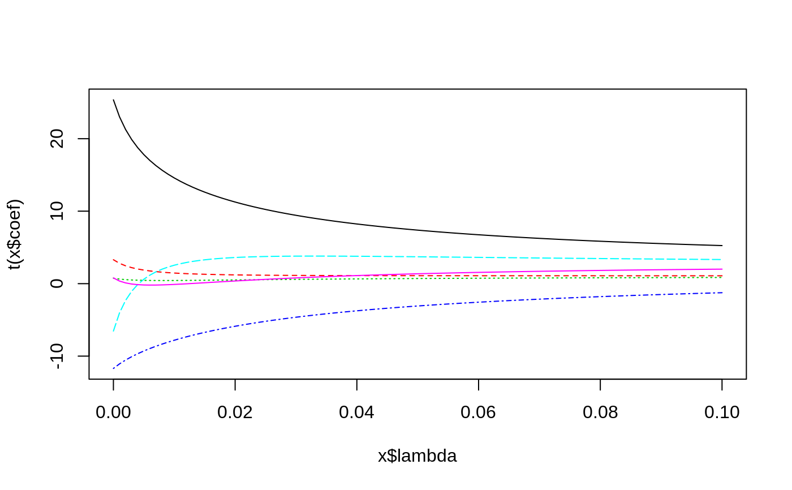

lm.ridge.RdFit a linear model by ridge regression.
lm.ridge(formula, data, subset, na.action, lambda = 0, model = FALSE, x = FALSE, y = FALSE, contrasts = NULL, ...)
| formula | a formula expression as for regression models, of the form
|
|---|---|
| data | an optional data frame in which to interpret the variables occurring
in |
| subset | expression saying which subset of the rows of the data should be used in the fit. All observations are included by default. |
| na.action | a function to filter missing data. |
| lambda | A scalar or vector of ridge constants. |
| model | should the model frame be returned? Not implemented. |
| x | should the design matrix be returned? Not implemented. |
| y | should the response be returned? Not implemented. |
| contrasts | a list of contrasts to be used for some or all of factor terms in the
formula. See the |
| ... | additional arguments to |
If an intercept is present in the model, its coefficient is not penalized. (If you want to penalize an intercept, put in your own constant term and remove the intercept.)
A list with components
matrix of coefficients, one row for each value of lambda.
Note that these are not on the original scale and are for use by the
coef method.
scalings used on the X matrix.
was intercept included?
vector of lambda values
mean of y
column means of x matrix
vector of GCV values
HKB estimate of the ridge constant.
L-W estimate of the ridge constant.
Brown, P. J. (1994) Measurement, Regression and Calibration Oxford.
longley # not the same as the S-PLUS dataset#> GNP.deflator GNP Unemployed Armed.Forces Population Year Employed #> 1947 83.0 234.289 235.6 159.0 107.608 1947 60.323 #> 1948 88.5 259.426 232.5 145.6 108.632 1948 61.122 #> 1949 88.2 258.054 368.2 161.6 109.773 1949 60.171 #> 1950 89.5 284.599 335.1 165.0 110.929 1950 61.187 #> 1951 96.2 328.975 209.9 309.9 112.075 1951 63.221 #> 1952 98.1 346.999 193.2 359.4 113.270 1952 63.639 #> 1953 99.0 365.385 187.0 354.7 115.094 1953 64.989 #> 1954 100.0 363.112 357.8 335.0 116.219 1954 63.761 #> 1955 101.2 397.469 290.4 304.8 117.388 1955 66.019 #> 1956 104.6 419.180 282.2 285.7 118.734 1956 67.857 #> 1957 108.4 442.769 293.6 279.8 120.445 1957 68.169 #> 1958 110.8 444.546 468.1 263.7 121.950 1958 66.513 #> 1959 112.6 482.704 381.3 255.2 123.366 1959 68.655 #> 1960 114.2 502.601 393.1 251.4 125.368 1960 69.564 #> 1961 115.7 518.173 480.6 257.2 127.852 1961 69.331 #> 1962 116.9 554.894 400.7 282.7 130.081 1962 70.551#> GNP Unemployed Armed.Forces Population #> 2946.85636017 0.26352725 0.03648291 0.01116105 -1.73702984 #> Year Employed #> -1.41879853 0.23128785#> modified HKB estimator is 0.006836982 #> modified L-W estimator is 0.05267247 #> smallest value of GCV at 0.0057